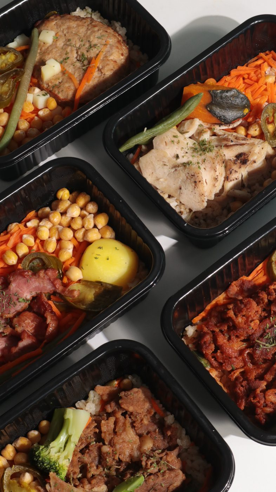

단백밥
밥과 단백질을 한 번에 챙기는 메인 식사 라인. 바쁜 날에도 따뜻하고 든든한 한 끼를 만든다.
Yundiet Detail Page Product Map
상세페이지에 바로 넣을 수 있도록 단백밥, 순수단백, 밸런시, 순소옥을 카테고리별로 나누고 각 제품의 역할, 장점, 이미지 영역을 정리했다.
밥과 단백질을 한 번에 챙기는 메인 식사 라인. 바쁜 날에도 따뜻하고 든든한 한 끼를 만든다.
단백질 반찬을 간편하게 보충하는 라인. 운동 후, 식단 구성, 한식 반찬 대체에 맞다.
곡물볶음밥 기반의 풍미형 식사 라인. 식단이 질리지 않도록 마라, 커리, 토마토, 시그니처 맛으로 넓힌다.
저당 통밀빵 라인. 빵을 포기하기 어려운 사람에게 아침, 간식, 식단빵 선택지를 준다.
단백밥은 윤식단의 중심 상품이다. 식단 도시락처럼 가볍게 보이기보다 “밥을 먹었다”는 만족감을 주는 따뜻한 한 끼로 보여주는 것이 좋다.


단백밥을 처음 접하는 고객에게 가장 먼저 보여줄 기본형.
한식 반찬 감성을 살리는 매콤한 식사형 메뉴.

호불호가 적고 가족, 직장인, 첫 구매자에게 설명하기 쉬운 맛.

식단이 지루해지는 순간에 고기 반찬 느낌을 주는 메뉴.

닭가슴살 중심 식단에서 벗어나 색다른 단백질 선택지를 주는 메뉴.

한 번에 여러 맛을 구성해 루틴을 만들기 좋은 세트 상품.
순수단백은 밥보다 단백질 반찬이 필요한 고객에게 맞다. 운동 후 보충, 식단 도시락 구성, 집밥 위에 올리는 단백질 반찬으로 보여주는 것이 좋다.


한 끼에 부담 없이 더하는 기본 단백질.
조금 더 든든한 단백질 양이 필요한 고객에게 맞는 구성.

제육볶음의 만족감은 살리고 당류 부담을 줄인 한식 반찬형 메뉴.

익숙한 불고기 맛으로 식단 반찬의 만족감을 높이는 메뉴.

닭가슴살이 지겨운 고객에게 식사 만족감을 주는 단백질 메뉴.
밸런시는 곡물볶음밥 기반의 풍미형 식사 라인이다. 식단이 무너지는 순간에 참는 선택이 아니라 맛있게 이어가는 선택지로 보여주는 것이 좋다.


자극적인 맛이 당길 때 식단을 포기하지 않게 만드는 맛.

향신료 풍미로 식단의 단조로움을 줄이는 메뉴.

산뜻하고 부담 없는 맛으로 가볍게 먹기 좋은 메뉴.

밸런시 라인을 대표하는 기본 풍미 메뉴.
순소옥은 빵을 포기하기 어려운 고객을 위한 저당 통밀빵 라인이다. 다이어트 식단의 금지 음식이 아니라 아침과 간식 루틴 안에 넣을 수 있는 식단빵으로 보여주는 것이 좋다.

아침 식사와 샌드위치 루틴에 넣기 좋은 기본 빵.

간식, 아침, 운동 전후에 부담 없이 꺼내 먹는 빵.
달달한 빵 욕구를 식단 안에서 해결하는 선택지.
카테고리별 대표 이미지를 크게 보여주고, “참는 식단”이 아니라 “계속 가능한 한 끼”라는 메시지로 시작한다.
단백밥은 메인 식사, 순수단백은 단백질 반찬, 밸런시는 맛 변화, 순소옥은 빵 루틴으로 역할을 나눈다.
각 제품 카드에는 썸네일, 제품명, 한 줄 역할, 장점 3개를 넣는다. 고객이 “내 상황에 맞는 제품”을 바로 고르게 만든다.
수치, 조리 시간, 냉동 보관, 실제 리뷰, 루틴 세트 구성을 제품군별로 연결한다. 정확한 영양 수치는 최종 상세페이지 제작 전 상품별로 재확인한다.